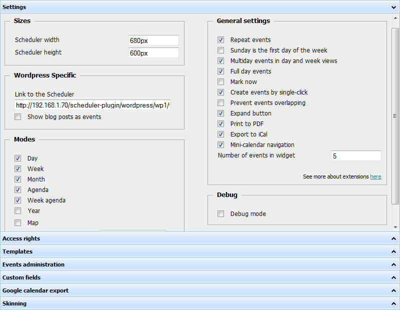
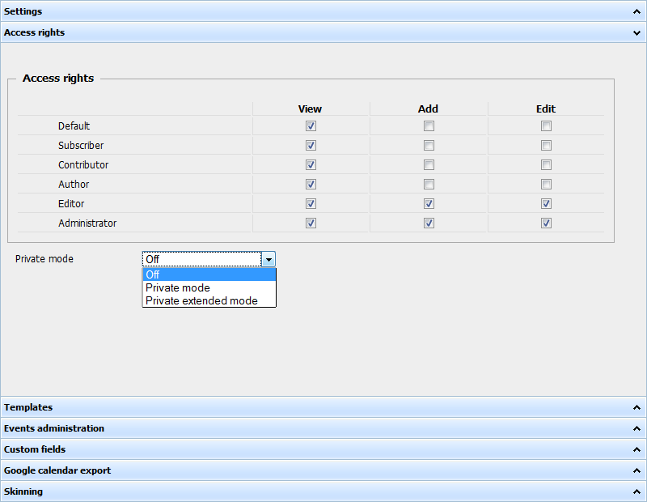
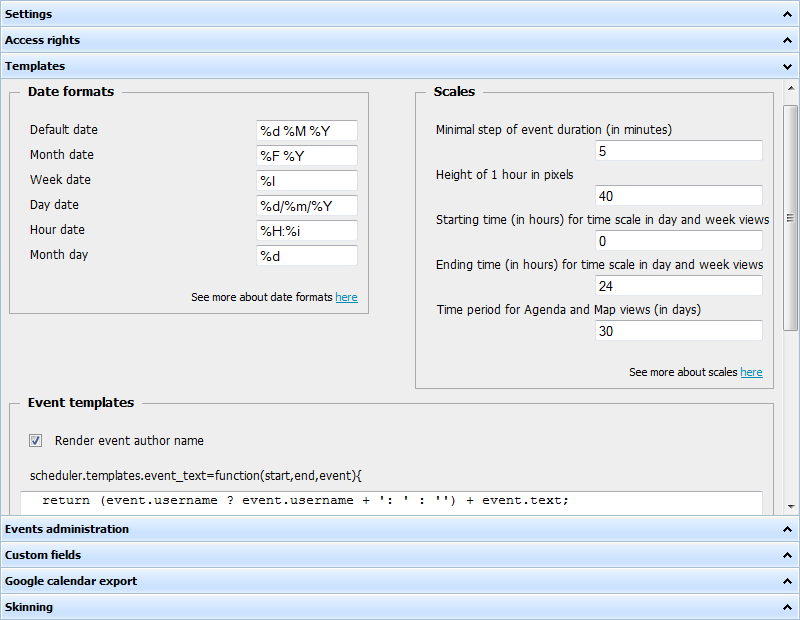
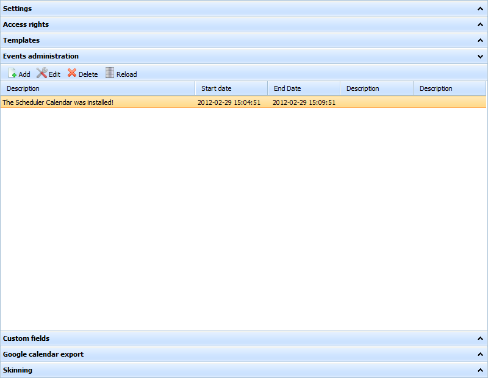
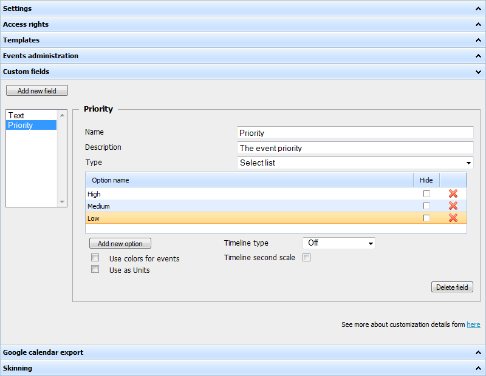
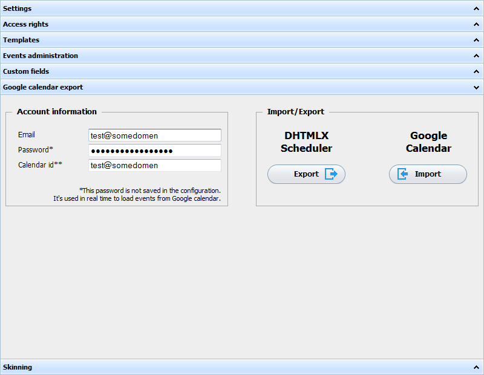
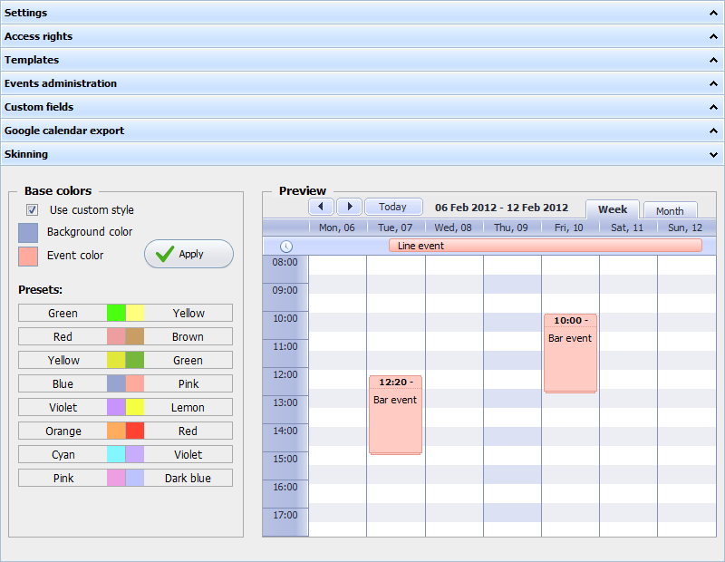

Universal plugin control panel
The control panel of the plugin has 8 panes:
Before changing anything, beware that settings will be applied only after pressing the 'Save changes' button. If you leave the page without saving - all changes will be lost.
Settings
The pane contains general configuration options.

- Sizes
- Scheduler width - the width of the scheduler on the page.
- Scheduler height - the height of the scheduler on the page.
- Wordpress Specific
- Link to the Scheduler - the path to the page where the scheduler will be placed on.
- Show blog posts as events - defines whether blog posts will be added to the scheduler as events.
- Modes - contains available views. Check those of them which tabs you want to present in your scheduler.
- Debug
- Debug mode - allows you to get detailed reports when data is not loaded or not saved correctly.
- General settings
- Repeat events - enables support of recurring events.
- Sunday is the first day of the week - specifies whether a week will be started from Sunday (check the option) or from Monday (leave the box unchecked).
- Multiday events in day and week views - enables support of multi-day events.
- Full day events - if the option is enabled then entry fields in the 'Time period' section of the lightbox while creating events will be blocked and the time period will be set to the full day from 00.00 the current cell date untill 00.00 next day.
- Mark now - if the option is enabled then the day and week views will have marker displaying the current time.
- Create events by single-click - allows creating new events by a single click.
- Prevent overlapping - allows only one event in the same timeslot.
- Expand button - adds the expand button, allowing you to view the scheduler in full screen.
- Print to PDF - adds the button that will invoke exporting to PDF.
- Print to iCal - adds the button that will invoke exporting to iCal.
- Mini-calendar navigation - adds the mini-calendar control to the toolbar for setting the scheduler date.
Access rights
This is the pane for managing users rights for adding/editing/deleting events.

The pane allows you to define the access level for different groups of users:
- Add - ability to create new events.
- Edit - ability to edit existing events.
- Show - ability to see the scheduler.
And set the private mode:
- off - events are public. Users see and can edit (if the appropriate check is set) all events.
- Private mode - users see and can edit (if the appropriate check is set) just self-created events.
- Private extended mode - users see all events but can edit (if the appropriate check is set) just self-created ones.
Templates
This pane lets you define different templates that can be used to change dispaying dates and titles in the scheduler.

You can define templates for:
- Dates.
- Time scales.
- Events
- Render event author name - allows you to display the name of the event author.
Once you have enabled the option - the client start to receive the login of the user created the event, in addition to the standard set: the text, the start and end dates. Also templates will be supplemented with the related text to display the author name in events.
If you then disable the option - the login name will stop being passed and displayed in the events.
For more information of available templates and their syntax, please follow the “See more about date formats here” link in the bottom right corner of the related section.
Events administration
The pane shows the list of all events and allows you to add/edit/delete them there.

Custom fields
The pane allows you to add custom fields to the lightbox.

There are two types of custom fields:
- Textarea - a text field.
- Select list - a select box with the list of options.
Each field can have:
- Name - the name of the field in DB ( will be created automatically )
- Description - the title of the field in the lightbox.
The select list fields have some extra flags:
- Use colors for events - allows you to define what color events will have depending on the option selected in the field.
- Use as Units - adds the unit view based on the list of options to the scheduler.
- Timeline type - adds the timeline view with one of the following time-scale units:
- Day
- Working Day
- 3 days
- Week
- Working week
- Month
- Year
- Timeline second scale - allows you to add the second scale to the Timeline view.
Note, you can use the hide column to not display some column in the scheduler.
Google calendar export
Provides the synchronization with Google Calendar and allows you to import to or export from Google Calendar.
Fill up the fields with account information and click the button appropriate to your needs. If the information entered by you is correct you'll see message 'Well done'.
To pass data from DHTMLX Scheduler to Google Calendar - click button 'Export'.
To pass data from Google Calendar to DHTMLX Scheduler - click button 'Import'.

Skinning
The pane is for styling the scheduler.
Select the desired color scheme (can use one of presets) and click the button 'Apply'. The scheme will be set and you can preview the gotten result in the right section.
Beware, if the option Use custom color is unchecked - your selected color won't be applied.

For advanced users
For advanced users we offer extra possibility - to wide available functionality.
All you need - scheduler_include.html file (you can find it in the plugin's folder: you_wordpress/wp-content/plugins/event-calendar-scheduler/scheduler_include.html).
How does it work?
You add the desired additions to the file. Essentially, it's all. To the page the contents will be added automatically (the file is included to the page on default).